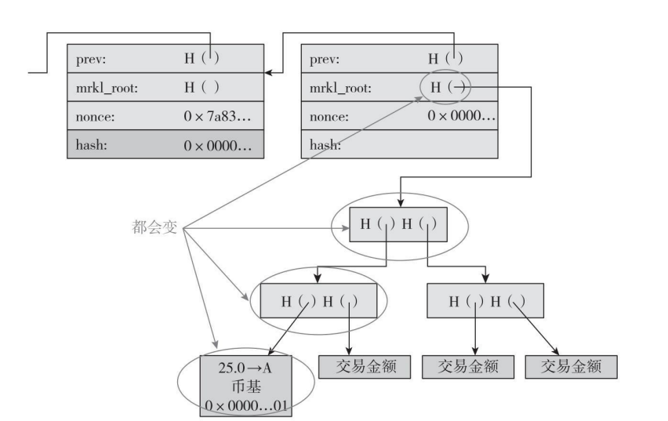

1.比特币矿工的任务
6个任务：
- 监听交易广播。监听网络上的交易广播，然后验证它们的签名是正当有效的，交易输出没有被重复支付。
- 维护区块链网络和监听新的区块。必须先维护区块链。为了做到这一点，一开始你可以要求其他节点把区块链上的历史记录（在你加入区块链网络之前的）同步过来。然后，监听那些被广播到网络上的新的区块。你的任务是验证你收到的每个区块，这里的验证是指保证区块里的每笔交易都是有效的，而且这个区块包含了一个有效的随机数。
- 组装一个备选区块。一旦拥有最新的全部区块链数据备份，就可以开始制造你自己的区块了。要做到这一点，你要把所监听到的交易进行组合并放进一个新的区块，然后把该新区块排在整条链中最新的区块的后面。你必须保证你建立的新区块里的每笔交易都是正当有效的。
- 找到一个让你的区块有效的随机数。
- 希望你的区块被全网接受。即使你找到了一个区块，也不能保证该区块会成为共识链（concensus chain）的一部分。这需要有点运气，希望其他的矿工接受你的区块，然后从该区块开始继续接龙下去，而不是从你的竞争对手发现的区块开始。[
- 获得利润。如果所有其他矿工接受了你的区块，那你就能获取利润。在2015年，一个区块的奖励是25个比特币，大约在10 000美元左右。此外，如果在该区块里的任何交易都有交易费，所有交易费也会为矿工所有。到目前为止，交易费作为额外收入，相对来说还比较低，大概是一个区块默认奖励的1%。
1.1 寻找有效区块
作为矿工，首先需要从交易池中选出一系列的交易并且编译成梅克尔树，然后组装一个新的区块，让它的头部指向区块链上的上一个区块。新区块的头部，有一个32位的随机数区域。需要尝试不同的临时随机数，直到这个随机数能使整个区块的哈希值都小于目标值。
在多数情况下，随机数试过所有32位可能的取值后，仍然不能产生一个有效的哈希值，这时候必须做出更多的改变。注意下图中，币基（coinbase)还有一个随机数可以改动。如果遍历了区块头部随机数所有可能取值后，可以改变币基里的随机数，比如加1，然后可以重新改变区块头部随机数来寻找有效的哈希值。

当改变币基里的随机数后，整个梅克尔树上交易的哈希值都会改变，因为币基值的改变会向上传递，所以改变币基的随机数值比改变头部随机数值的代价要大很多。正因为如此，矿工大部分时间
只改动头部的随机数，只有在遍历头部2^32个随机数值且还没有找到一个有效区块时，才改动币基的随机数。
每个人都在运算同一个谜题吗？
当然不是。首先，矿工们不太可能在完全相同的一个区块上进行运算，因为每个矿工都会把或多或少不同的交易用不同的次序来放进区块内。但更关键的是，就算两个不同的矿工所组建的区块里包括了一模一样的交易，这两个区块的哈希值还是会不同。请记住在币基交易里，矿工会写自己的地址接收新铸币。这个地址本身的区别会沿着梅克尔树往上传递直达树根，导致整棵树上的哈希函数值不同，从而保证了没有两个矿工的区块是一样的。除非两个矿工共享公开密钥。这种情况只有可能两个矿工同在一个矿池（我们以后会讨论）。同在一个矿池的矿工会互相通信，确保使用不同的币基临时随机数以避免重复工作。
挖矿难度
每挖出2016个区块，挖矿难度会改变一次，这个周期大约是两个星期。难度的改变是根据上2016个区块的挖矿效率来决定的。
调整挖矿难度，使得保持约10分钟能挖到一个区块的难度。